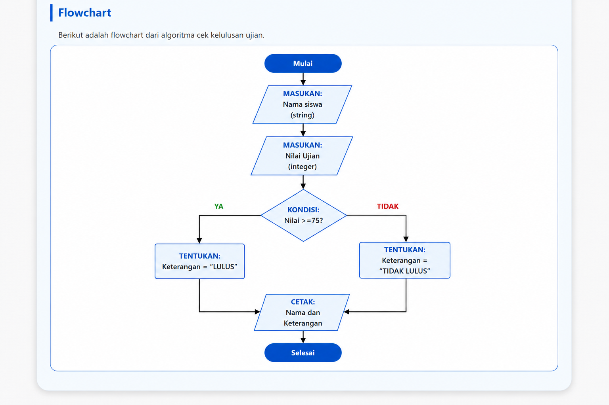

Algoritma Cek Kelulusan Ujian
Seorang guru ingin menentukan status kelulusan siswanya berdasarkan nilai ujian mata pelajaran Matematika. Jika nilai siswa lebih besar atau sama dengan 75, maka siswa dinyatakan "LULUS". Jika nilai di bawah 75 maka dinyatakan "TIDAK LULUS".
| Variabel | Tipe Data |
|---|---|
| nama_siswa | String |
| nilai_ujian | Integer |
| keterangan | String |

| Nama Siswa | Nilai Ujian | Status |
|---|---|---|
| Andi | 80 | LULUS |
| Budi | 65 | TIDAK LULUS |